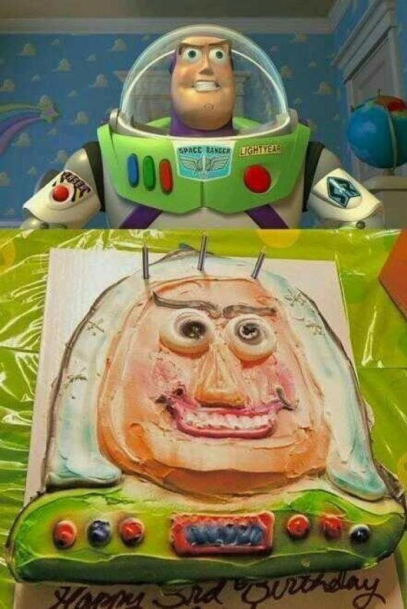
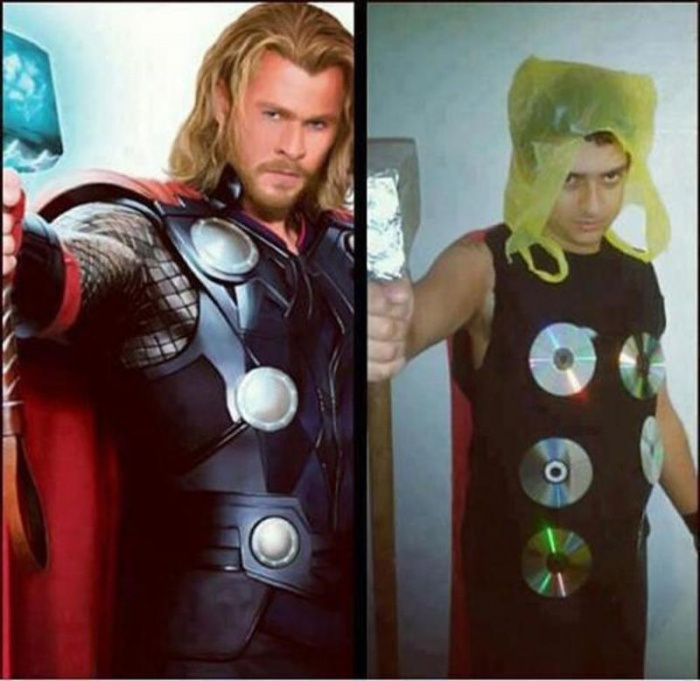
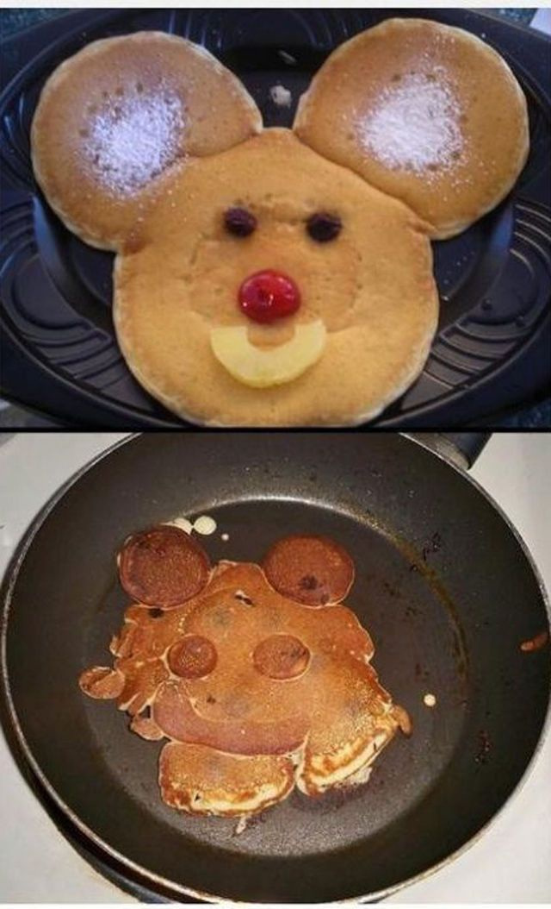

Something is Wrong with Buzz
Buzz Light year would be hardly recognized by Woody, if the cowboy-toy saw this cake. Because the space ranger known worldwide looks more like no less famous personality of Benjamin Franklin! Seems like this attempt of flying to infinity ended up slightly wrong.View Gallery
Almost a Superhero
Who said that looking like your superhero is easy? It's not, and any make-up artist and video-production master will confirm that to you. However, some people don't think so, and simply use everuthing they can to look at least a bit like superheroes. It's good they don't walk out in the streets trying to save people. Who knows what would happen to them.View Gallery
Poor Tinkerbell
Poor Tinkerbell! She must have flown to fast, crashed into something and smashed. Well, she looked so much better in the fairy-shape, and the pancake-shape doesn't suit her at all. Maybe, except for the flying properties, the magic dust also turns pancakes back into faries?View Gallery
Best Cosplay Ever
Most of you know what cosplay is: it derives from the “costume play” shortening and means that people turn into their favorite characters dressing up like them. This boy seems to have the right idea of what cosplay is. Some CDs, plastic bag, hammer and some foil-and Thor’s image is ready!View Gallery
Gaga Will Be Pleased

Sometimes fan-art can get really untrue to life, which makes it incredibly funny. Lady Gaga loves everything eccentric and unusual, but would she like her own picture that doesn’t look like her at all? Probably she would have created a dress, all covered with such pictures.View Gallery
Spitting Image
Making ordinary pancakes can make you slave over a hot stove, but making those pancakes look like cute animal faces is just a beyond-possible task. Maybe it’s for the best? After all, eating small cute animals is kind of unpleasant, while eating simple pancakes is pretty acceptable.View Gallery
I want wake up here sometime

These pics are truly gorgeous! Each of these pictures will make you want to see the places in the pictures for real. Enjoy the pics and you’re welcome ;) – The Fascinating Pics TeamView Gallery
“Between the mountains”
These pics are truly gorgeous! Each of these pictures will make you want to see the places in the pictures for real. Enjoy the pics and you’re welcome ;) – The Fascinating Pics TeamView Gallery